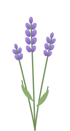
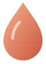
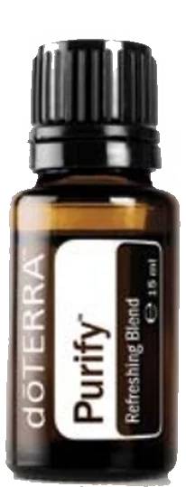
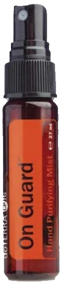
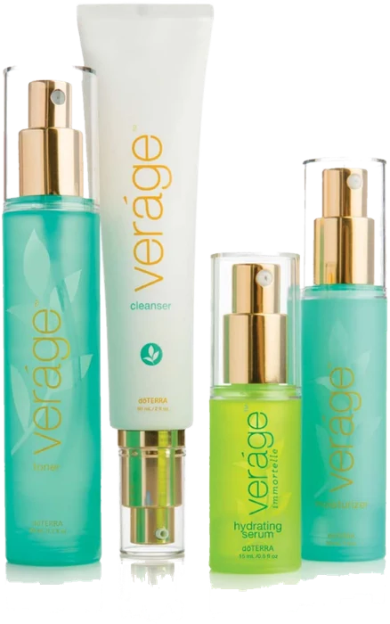
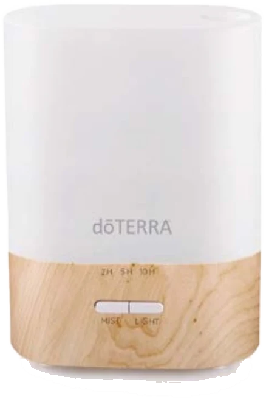

вечер
Спокойна вечер
Меки, топли аромати за спокойния край на деня. Дифузерът създава уют, докато четете или се приготвяте за сън.
- Лавандула 15 ml
- dōTERRA Serenity™ 15 ml
- Кедрово дърво 15 ml
- Дифузер „Petal“
Капка грижа всеки ден
Не е нужно да разбирате от масла. Кажете ми какво търсите и ще ви предложа с какво да започнете, как да го използвате и как да го поръчате на по-добра цена.


започнете оттук
Отговорете на 4 кратки въпроса и ще ви предложа 3 продукта, подходящи за вас. Отнема по-малко от минута.
Подбрах ги така, че да работят добре заедно. Можете да ги поръчате наведнъж с моя линк.
вечер
Меки, топли аромати за спокойния край на деня. Дифузерът създава уют, докато четете или се приготвяте за сън.



дом
Чисти, цитрусови аромати за кухнята, хола и когато чакате гости.
Отзив от клиент 1: 1–3 изречения с нейни думи.
Отзив от клиент 2: 1–3 изречения с нейни думи.
Отзив от клиент 3: 1–3 изречения с нейни думи.
Безплатен наръчник
Кратък PDF наръчник: как се използват маслата безопасно, 5 лесни ритуала за сутрин, вечер и дома, и с кои 3 масла е добре да започнете.
пример Добре дошли в новия сайтТук ще намирате промоциите на месеца, нови продукти и идеи за малки ритуали у дома.пример Продукт на месеца: ЛавандулаЗащо лавандулата е първото масло, което препоръчвам, и три лесни начина да я използвате вечер.пример Работилница: аромати за домаПокана за среща, на която ще опитаме различни масла и ще направим собствена ароматна смес.

 Етерични маслаЕдинични масла, смеси, рол-он формати и комплекти за начинаещи и напреднали.120 продукта
Етерични маслаЕдинични масла, смеси, рол-он формати и комплекти за начинаещи и напреднали.120 продукта

 Продуктови линииСерии, изградени около една смес: от етеричното масло до продукти за дома и тялото.32 продукта
Продуктови линииСерии, изградени около една смес: от етеричното масло до продукти за дома и тялото.32 продукта


Грижа за кожата, косата и тялотоКозметика с етерични масла: лице, тяло, коса и лична хигиена.32 продукта

 Хранителни добавкиЕжедневни комплекси, добавки за храносмилането, за жени и за деца.25 продукта
Хранителни добавкиЕжедневни комплекси, добавки за храносмилането, за жени и за деца.25 продукта


Дифузери и основни продуктиДифузери, базово кокосово масло, капсули и други помощни продукти.7 продукта